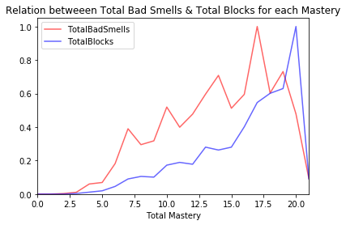
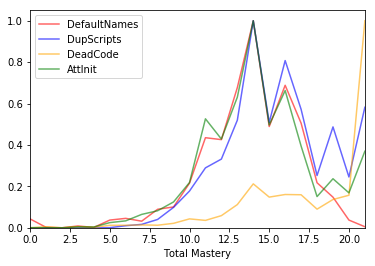

1. To what extent are bad habits present in Scratch projects?
2. Does the development of CT skills relate to the presence of bad smells?
3. Do projects with more blocks have a higher number of bad smells?
4. Can we find a relation among specific bad smells?
5. To which extent can bad smells be identified in each of the CT development phases?